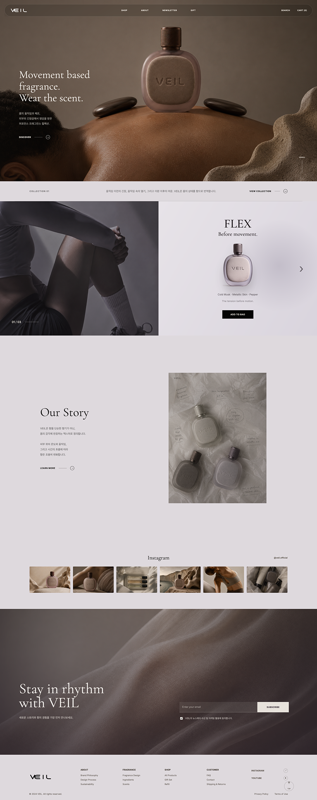
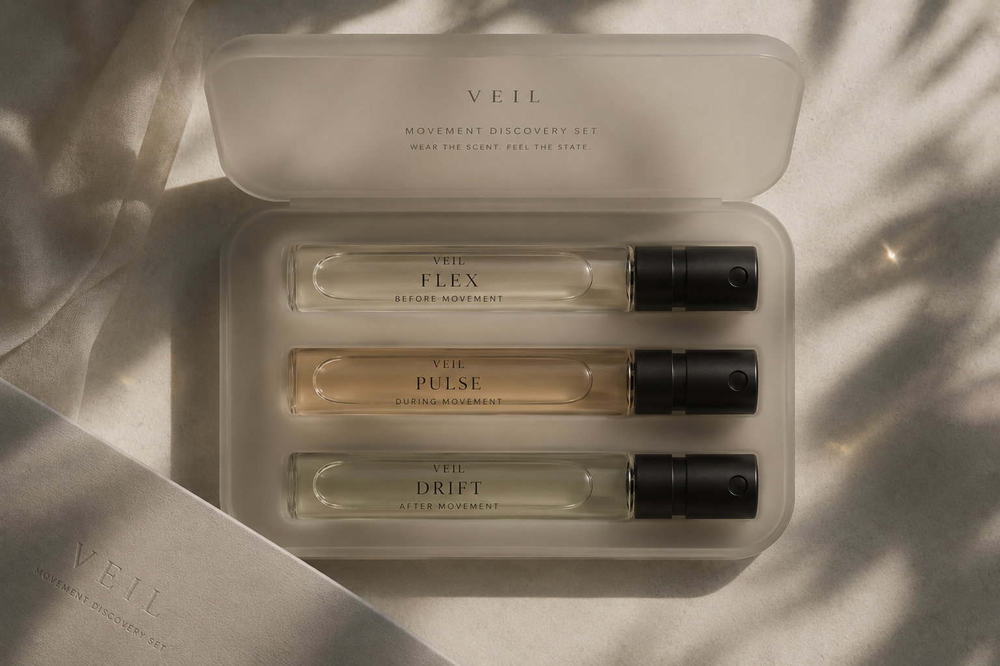
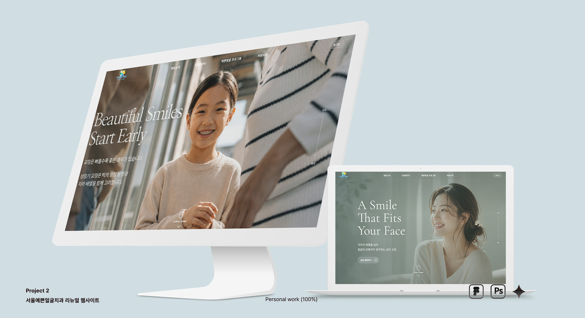

About
브랜드의 이야기와 사용자의 경험을 연결하는 디자인을 합니다. UX 중심 리서치, 디지털 디자인, 그리고 협업 흐름을 바탕으로 사람에게 자연스럽게 닿는 화면을 고민합니다.
빠르게 관찰하고 세심하게 다듬으며, 익숙한 것을 새로운 시선으로 정제하는 과정을 디자인합니다.


Profile
2002.01.13
Contact
yangjungkkang0@gmail.com 010.2772.2217About
브랜드의 이야기와 사용자의 경험을 연결하는 디자인을 합니다. UX 중심 리서치, 디지털 디자인, 그리고 협업 흐름을 바탕으로 사람에게 자연스럽게 닿는 화면을 고민합니다.
빠르게 관찰하고 세심하게 다듬으며, 익숙한 것을 새로운 시선으로 정제하는 과정을 디자인합니다.
Education
Tool
22.04~ 하랑 커뮤니케이션
22.07 생산 프로세스 관리
공급망 커뮤니케이션
업무 효율화 경험
22.07~ BALENCIAGA
24.08 럭셔리 브랜드 고객 응대
오프라인 구매 여정 이해
VMD 경험
24.10 GTQ Photoshop 1급 취득
26.03~
26.06 주노소프트 카페24
디자인스킨 제작 프리
25.03~ (주) 유디포커스
25.11 온라인 쇼핑몰 운영관리
프로모션 전략 기획
고객 행동 데이터 분석
26.06 AIAT 자격증 합격예시
파일 제작제공
광주한옥마을 예약 경험 설계
자린고비 절약 습관 앱 개발
Veil 향수 브랜드 아이덴티티
치과 웹 리디자인

Project 01
Overview
특히 숙박 예약을 중심으로 서비스를 이용하는 사용자가 예약 페이지까지 도달하기 위해 여러 경로를 탐색해야 하는 문제가 있었습니다.
다양한 목적의 서비스들이 일관성 없이 나열된 형태

숙박과 연회 행사가 동일 구조 안에 섞여 목적 구분이 어려움

표 형태의 객실 정보와 과도한 이미지로 스크롤 피로 발생

매력적인 공간임에도 기능 중심 정보로 브랜드 가치 전달이 어려움

기존 네비게이션 구조

PLOBLUM
개선된 네비게이션 구조
한옥스테이 · 다이닝 · 연회·대관 핵심 서비스에 집중하여 예약으로 이어지는 구조 강화
이용안내 · 예약조회 고객이 필요한 정보와 관리 기능을 찾기 쉽도록 독립 메뉴로 구성
소개 · 오시는길 · 액티비티 · 갤러리 · 카페 새오개길 마을의 가치와 콘텐츠를 통합하여 브랜드 이해를 돕는 허브 역할
사용 목적에 맞는 서비스 탐색
7개 메뉴에서 5개 메뉴로 핵심 구조 단순화
예약 전환율 및 접근성 향상
예약 확인/관리 메뉴를 상단에 배치
정보 구조 단순화로 사용자 경험개선
일관된 카테고리 체계로 이해도 향상
서비스 별 예약 방식이 달라 사용자의 이해와 예측이 어렵고, 예약 가능 여부와 경로를 탐색한 후에야 확인이 가능하다는 문제점을 발견했습니다.
숙박 예약 화면에 연회(대관) 서비스를 표 형태의 부가서비스로 추가하는 방식
돌잔치 / 팔순 / 웨딩 / 연회행사 탭에서는 게시판 형태의 전화 문의 방식으로만 안내


Stay 페이지에서 객실 정보에 대한 내용만 한눈에 볼 수 있도록 개선했어요


분리되어 있던 예약 단계를 하나의 화면으로 통합하여 예약 완료까지의 이동 경로를 최소화했습니다.


숙박 비교 플랫폼이 아닌 브랜드 경험에 집중
자연광, 목재 질감, 전통 오브제 등 공간 경험 전달
전통 정체성 유지, 여백 미니멀 디자인 적용
Project 02

Project 03
VEIL은 피부의 질감과 몸의 움직임에서 영감을 받은 프래그런스 브랜드입니다.
움직임 속 긴장과 열감, 그리고 이완 이후의 여운을 향과 시각 언어로 번역했으며,
피부의 상태를 컬러, 질감, 이미지 시스템으로 확장해 브랜드 경험 전체를 설계했습니다.
사용자가 향을 읽기보다 감각적으로 경험할 수 있도록 설계한 브랜딩과 웹 경험 디자인 프로젝트입니다.
Texture
기존 향수 브랜드의 향료 중심으로 전개하는 방식에서 벗어나,
VEIL은 하나의 컬렉션을 중심으로 브랜드 경험을 구성했습니다.
메인 페이지와 Shop 페이지 전반에
Movement Collection에 대한 서사를 반복적으로 노출하여
사용자가 제품보다 컬렉션을 먼저 경험하도록 설계했습니다.
INFORMATION ARCHITECTURE

사용자는 브랜드 → 컬렉션 → 향수 순서로 이동하며
Movement Collection의 서사를 자연스럽게 경험하게 됩니다.
Image Direction
반복적으로 인물이 등장하는 대신, 피부 질감과 움직임의 일부만 드러나는 이미지 구성을 사용했습니다. 부분적인 신체, 빛과 그림자, 소재의 긴장감이 향의 온도와 상태를 시각적으로 표현합니다.
향을 단순한 향료의 조합이 아닌, 몸이 느끼는 감각의 변화로 해석하고자 했습니다.
이를 위해 Movement Collection이라는 가상의 컬렉션을 기획하고,
움직임 이전의 긴장(FLEX), 움직임 속의 열감(PULSE), 움직임 이후의 이완(DRIFT)을 하나의 경험 흐름으로 설계했습니다.
웹에서는 향을 직접 전달할 수 없습니다.
따라서 향의 상태를 피부 질감, 움직임의 흔적, 컬러와 이미지 시스템으로 번역하여 사용자가 화면을 통해서도 향의 분위기와 감각을 경험할 수 있도록 디자인했습니다.
클래식 세리프 타이포를 메인으로 사용해 향의 무드를 유지하되, 전체 인터페이스는 미니멀한 구조로 정리해 브랜드가 과하게 올드해 보이지 않도록 균형을 맞췄습니다.
Hero Title Collection/ Title Section/ Heading
Navigation/ Product Information/ Body Copy


Movement based fragrance.
피부의 질감과 몸의 움직임에서 영감을 받은 VEIL의
브랜드 정체성을 첫 화면에서 직관적으로 전달합니다.
사용자가 제품보다 컬렉션을 먼저 경험할 수 있도록 Movement Collection을 메인 페이지 초반에 배치했습니다.
에디토리얼 레이아웃을 활용해 브랜드 스토리 영역을 구성했습니다.
Community point
SNS 콘텐츠를 활용하여 브랜드 무드를 확장했습니다.
사용자는 실제 제품 이미지와 라이프스타일 이미지를 함께 경험할 수 있습니다.
향을 구매하는 경험보다 컬렉션을 경험하는 과정을 먼저 설계했습니다. Movement Collection을 중심으로 탐색 구조를 구성하여 브랜드의 감각과 서사를 이해한 뒤 제품을 탐색하도록 유도했습니다.

MOVEMENT COLLECTION
 PULSE
피부에 올라오는 선명한 열감
PULSE
피부에 올라오는 선명한 열감

GIFT SET

향을 직접 경험할 수 없는 온라인 환경에서,
질감과 온도를 연상시키는 이미지를 활용해
향의 상태를 시각적으로 전달했습니다.
Scent Timeline
향의 변화를 단순한 노트 정보 대신
시간의 흐름으로 표현했습니다.
사용자는 향이 변화하는 과정을
직관적으로 이해할 수 있습니다.
Discovery Set
향을 선택하기 전에 브랜드를 천천히
경험할 수 있도록 설계한 입문형 세트.

Project 04
정보 중심의 기존 사이트를 얼굴 윤곽과 진료 경험의 신뢰감을 전하는 브랜드 경험형 랜딩 페이지로 재구성했습니다.
정보 중심의 병원 사이트를 브랜드 경험 중심의 랜딩 페이지로 재구성하여 신뢰와 인상을 동시에 전달하는 흐름으로 전환했습니다.
Information-Driven
Dental Website
Brand Experience
Landing Page


자연에서 영감을 받은 그린과 뉴트럴 톤을 중심으로, 차갑지 않으면서도 전문적인 브랜드 인상을 형성했습니다.
사용자의 심리적 여정과 상담 흐름을 기반으로 브랜드 경험을 구축하고, 상담 전환까지 자연스럽게 연결되는 구조를 설계했습니다.


이번 프로젝트를 통해 단순한 클릭 이동이 아닌, 브랜드와 사용자의 감정을 연결하는 디지털 경험 설계의 중요성을 확인했습니다.